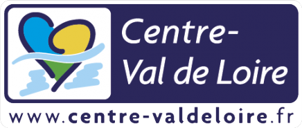
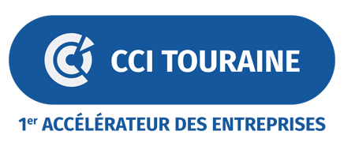

C’est en 2020 que l’idée de Berclet commence à germer dans mon esprit. En plein confinement chez moi, toujours devant l’ordinateur, et bien souvent à faire plusieurs choses à la fois, je réalise à quel point j’ai régulièrement des problèmes de son.
Typiquement, je regarde très souvent une vidéo, ou bien j’écoute un podcast, tout en jouant à un jeu vidéo. Et c’est génial de pouvoir faire les deux en même temps. Surtout qu’il y a souvent des moments de calme dans les jeux où on peut plus facilement suivre l’autre contenu et vice-versa. Mais voilà, les intensités sont très variables et on est souvent frustré quand un dialogue du jeu devient inaudible à cause de l’autre contenu, ou bien qu’une publicité se déclenche avec un niveau sonore bien plus élevé. Les situations sont multiples, mais le besoin reste le même.
Windows apporte une solution logicielle à ce problème : le mélangeur audio. Vous pouvez changer le niveau sonore de chaque application de façon indépendante. Et ça marche super bien ! Par contre, dans le cadre d’une activité vidéo-ludique, on est obligé de rebasculer sous windows et de faire le réglage à la souris, puis de retourner dans le jeu pour s’apercevoir que le réglage n’est toujours pas bon. Si seulement je pouvais régler toutes ces tranches sans quitter mon jeu … voilà la raison même de Berclet.
Dès l’été 2020, je réalise les premiers POC (proof of concept) et je développe les logiciels associés. J’ai très vite la confirmation que c’est techniquement faisable !
A partir de là, et pendant plus de deux ans, je vais travailler au développement du produit, faire appel à un designer industriel pour m’accompagner sur les considérations esthétiques, réaliser et optimiser de nombreux prototypes et sécuriser des financements pour emmener ce produit jusqu’au bout.
En Juin 2022, un nouveau cap est franchi et j’ouvre de nouveaux bureaux à Tours où je commence à y structurer une petite équipe pour travailler, en grande partie, sur ce projet.
Nous sommes désormais aux toutes dernières étapes, les précommandes débutent, et j’ai hâte d’avoir vos avis !
Clément Gilavert, inventeur de Berclet
Berclet est une marque entièrement française qui souhaite être acteur de sa réussite avec une démarche locale et responsable. C'est pour cela que pour mener à bien ce projet, différents organismes nous soutiennent sur la création de ce produit comme BPI France, la Région Pays de la Loire, la Région Centre Val de Loire, la CCI Tourraine ainsi que The Place by CCI 37.
BPI France nous soutient depuis le début du projet. Elle accompagne dans la volonté de réussir, de se dépasser, de se battre et de ne jamais rien lâcher. BPI France finance les entreprises à chaque étape de leur développement en crédit, en garantie et en fonds propres. Nos échanges ont permis de fiabiliser l’ensemble du projet, notamment financièrement.
Nous sommes reconnaissants envers tous ces acteurs qui nous permettent de confronter nos idées et nos ambitions, et qui nous apportent de réelles solutions concrètes. Grâce à eux, nous sommes aujourd’hui très confiants dans notre démarche et nos valeurs.
Retrouvez leur site internet pour de plus amples informations :
 
Communiqué de presse :
TéléchargerEn cas de besoin, n'hésitez pas à nous contacter, nous nous ferons un plaisir de vous aider :